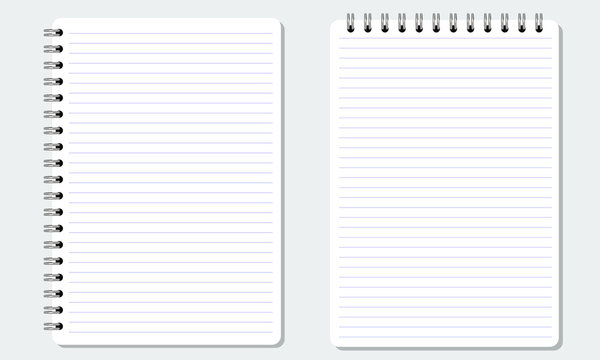

Workout Application
Welcome to Lee's Workout Application – your dedicated fitness partner on the path to a stronger, healthier you! Whether you're a fitness fanatic or just starting your journey, Lee's Workout App is designed to empower you with tailored exercise programs and cutting-edge features. Explore a variety of workouts carefully crafted by fitness experts to cater to your individual goals and preferences. From intense HIIT sessions to serene yoga flows, Lee's Workout App offers a diverse range of routines to keep your fitness journey exciting and effective. Track your progress effortlessly with our user-friendly interface. Set and achieve personalized fitness goals, and watch as Lee's Workout App transforms your sweat into success. With real-time analytics and performance insights, you'll always be in control of your fitness trajectory. Looking for motivation? Lee's Workout App has you covered! Receive daily inspirational quotes and tips to keep you motivated and focused. Whether you're breaking a sweat at the gym or working out from the comfort of your home, Lee's Workout App is there to support you every step of the way. Connect with fellow fitness enthusiasts in the Lee's Workout community. Share your achievements, swap workout strategies, and build a network of like-minded individuals who understand the highs and lows of the fitness journey. Embark on a fitness adventure like never before – download Lee's Workout App now and redefine what your body is capable of achieving. Your journey to a fitter, stronger, and healthier lifestyle starts with Lee's Workout App!
Music/Lyrics API Project
Welcome to LyricBeat – Your Melodic Muse Unleashed! Dive into the realm of musical expression with LyricBeat, the ultimate song lyrics app that puts the power of poetry at your fingertips. Whether you're a die-hard music lover, a casual listener, or a lyrical wordsmith, LyricBeat is here to amplify your connection to the songs that soundtrack your life. Key Features: Lyric Library: Access an extensive collection of song lyrics from your favorite artists and genres. LyricBeat's vast database ensures that you can find the words to that song stuck in your head or discover the meaning behind the latest chart-topper. Instant Search: Experience lightning-fast lyric retrieval with our intuitive search feature. Simply type a snippet of the lyrics or the song title, and LyricBeat will do the rest, bringing you closer to the music you love. Karaoke Mode: Elevate your singing sessions with our Karaoke Mode. Display lyrics in real-time as the song plays, turning your living room into a stage. Sing along with precision, or just enjoy the immersive experience. Offline Access: Take your favorite lyrics with you wherever you go. LyricBeat allows you to save lyrics for offline access, ensuring that you can belt out your favorite tunes even when there's no internet connection. Personalized Collections: Create playlists of your most cherished lyrics or compile a collection of songs that resonate with specific moods or memories. LyricBeat adapts to your preferences, making every lyric-search a personalized journey. Discover New Music: Explore and expand your musical horizons with LyricBeat's "Discover" feature. Find trending lyrics, discover hidden gems, and stay in the know about the latest releases from your favorite artists. Lyric Contributions: Be a part of the LyricBeat community by contributing your favorite lyrics. Share the joy of music by adding missing lyrics and helping fellow users complete their musical searches. Unleash the lyrical magic – download LyricBeat now and let the melodies and words of your favorite songs weave their way into your soul. Your musical journey starts here!
Recipe Finder
Introducing FlavorQuest – Your Culinary Navigator for Every Dish Imaginable! Embark on a flavor-filled journey with FlavorQuest, the ultimate recipe finder application designed to satisfy your culinary curiosity. Whether you're a seasoned chef or a kitchen novice, FlavorQuest is here to guide you through a world of diverse and delicious recipes. Key Features: Smart Search: Explore an extensive database of recipes with our intelligent search feature. Simply enter ingredients, cuisine preferences, or dietary restrictions, and let FlavorQuest uncover a treasure trove of culinary delights tailored to your taste. Recipe Recommendations: Receive personalized recipe recommendations based on your past searches and preferences. Let FlavorQuest be your culinary muse, suggesting new and exciting dishes to try. Ingredient Scanner: Unsure what to cook with the ingredients in your pantry? Use the Ingredient Scanner to snap a picture or manually input what you have, and let FlavorQuest generate recipes that match your available ingredients. Step-by-Step Instructions: Dive into detailed, step-by-step instructions for each recipe. Whether you're a seasoned chef or a beginner, FlavorQuest ensures that every dish is a breeze to prepare. Nutritional Information: Stay informed about the nutritional content of your meals. FlavorQuest provides detailed nutritional information for each recipe, helping you make informed choices about your culinary creations. Save and Share: Build your personalized recipe collection by saving your favorite dishes. Share your culinary triumphs with friends and family, or explore their saved recipes for a collaborative cooking experience. Meal Planning: Simplify your weekly meal planning with FlavorQuest. Plan your breakfasts, lunches, dinners, and snacks in advance, and generate shopping lists to ensure you have all the ingredients you need. Cuisine Explorer: Take a virtual trip around the world with our Cuisine Explorer feature. Discover recipes from different cultures and expand your culinary horizons with a diverse array of flavors. Embark on a FlavorQuest today – download the app and let the adventure in your kitchen begin! Unleash the chef in you and savor the joy of discovering new recipes with FlavorQuest.
React App MDN To Do List
Creating a to-do list application in React involves designing and implementing components to manage the state of tasks, handle user interactions, and update the UI dynamically. Below is an overview of how you might structure a simple to-do list application using React, along with explanations of key concepts.